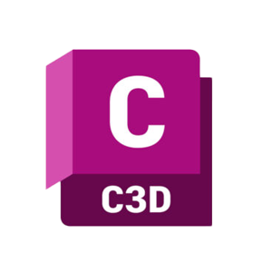
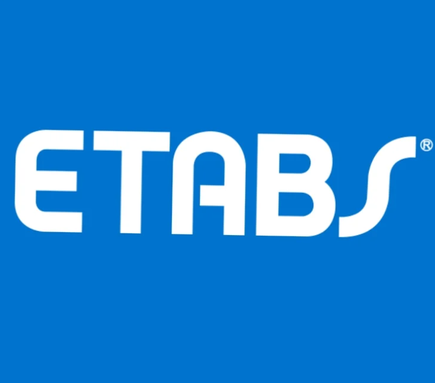
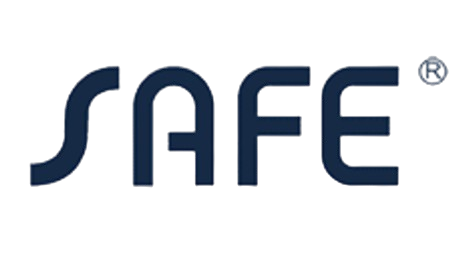

À propos de CivilNorth Academy
Votre partenaire de référence en formation pratique en Génie Civil
Situé à Tanger, notre centre de formation est spécialisé dans le développement des compétences techniques et professionnelles dans le domaine du génie civil, de l'architecture et du bâtiment.
Notre mission est de rapprocher la formation des réalités du terrain en proposant des programmes axés sur la pratique, les études de cas réelles et les outils utilisés par les professionnels du secteur.

Notre Vision
Devenir le centre de référence au nord du Maroc dans la formation pratique en génie civil, en contribuant à la formation d'une nouvelle génération de professionnels qualifiés, capables de répondre aux exigences techniques et technologiques du secteur de la construction.
Notre Mission
- Former des professionnels compétents et opérationnels.
- Renforcer les compétences techniques et numériques dans les métiers du bâtiment.
- Faciliter l'insertion professionnelle grâce à des formations orientées marché.
- Promouvoir l'utilisation des technologies BIM et des outils numériques.
Nos Domaines de Formation
Nous proposons des formations spécialisées dans plusieurs disciplines du génie civil.
Dessin technique et DAO
Modélisation BIM
Calcul et dimensionnement des structures
Gestion et planification de projets
Métré et estimation des coûts
Suivi et pilotage des chantiers
Infrastructure et VRD
Logiciels Enseignés
Nos formations intègrent les logiciels les plus utilisés dans le secteur pour préparer les apprenants aux exigences réelles des projets.
 AutoCAD
AutoCAD
 Revit Architecture
Revit Structure
Revit MEP
Revit Architecture
Revit Structure
Revit MEP
 Robot Structural Analysis
Robot Structural Analysis

Civil 3D.png) Covadis
Covadis
 MS Project
MS Project

ETABS SAP2000
SAP2000

SAFENotre Méthode Pédagogique
Learning by Doing
Travaux pratiques intensifs
Études de cas réels
Projets professionnels complets
Encadrement par des experts
Groupes à effectif réduit
Accompagnement personnalisé
Pourquoi Nous Choisir ?
Formations 100 % pratiques
Formateurs expérimentés issus du monde professionnel
Programmes adaptés aux besoins du marché de l'emploi
Équipements et outils professionnels
Accompagnement vers l'insertion professionnelle
Attestation de formation à la fin du parcours
Construisons Ensemble Votre Avenir Professionnel
Notre ambition est de fournir à chaque apprenant les compétences techniques, méthodologiques et numériques nécessaires pour réussir dans les métiers du génie civil et contribuer efficacement aux projets de construction de demain.
Rejoignez-nous et transformez votre passion pour la construction en véritable expertise professionnelle.